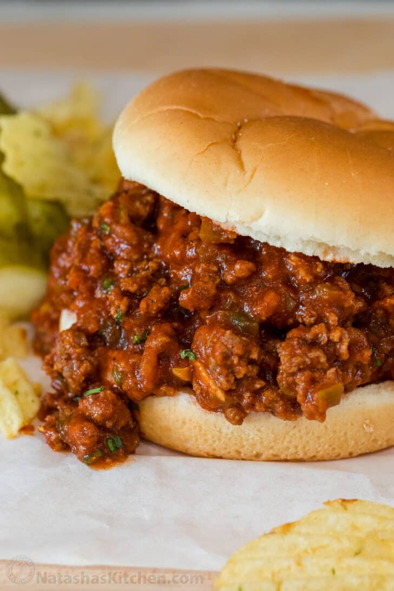

Sloppy Joes

Image of a Sloppy Joe
Ingredients
- 1 pound lean ground beef
- ¼ cup chopped onion
- ¼ cup chopped green bell pepper
- ¾ cup ketchup, or to taste
- 1 tablespoon brown sugar, or to taste
- 1 teaspoon yellow mustard, or to taste
- ½ teaspoon garlic powder
- salt and ground black pepper to taste
- 6 hamburger buns, split
Steps
- Cook the beef, onion, and green pepper.
- Drain the liquids, then stir in the remaining ingredients.
- Simmer for about 30 minutes. Serve on hamburger buns.